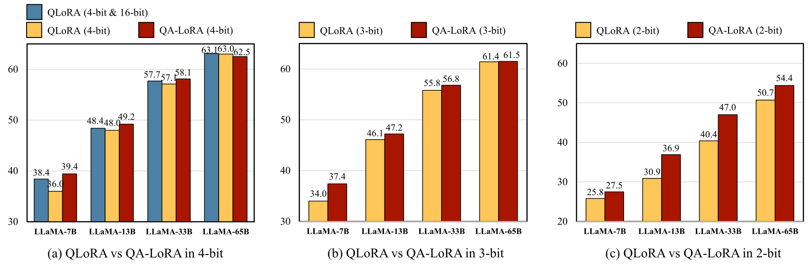
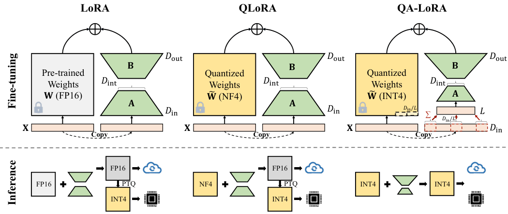

QA-LoRA 论文研读：分组适配与量化模型的等价合并¶
简述：把 LoRA 输入与量化分组对齐，使组内共享的权重增量能吸收到浮点量化偏移中，直接得到合并后的低位模型。
paper：QA-LoRA: Quantization-Aware Low-Rank Adaptation of Large Language Models · ICLR 2024
code：yuhuixu1993/qa-lora · refs：LoRA、QLoRA
backbone：LLaMA 7B–65B、LLaMA 2 7B/13B · date：2023-09（预印本）
modality / languages：文本；原论文主要使用英语指令与基准。
论文简介¶
在量化基座上训练 LoRA 能降低训练显存，但一般的浮点低秩更新无法直接写进固定整数代码；若先浮点合并再量化，又会产生新的误差。QA-LoRA 将输入特征按量化组聚合，在较低维度上训练适配器，使同一量化组内的权重增量共享一个值。这样可把更新吸收到每组的浮点量化偏移中，保持整数权重代码不变，消除合并阶段额外的再次量化。论文在 LLaMA 系列的 MMLU 和常识问答上比较四、三、二位部署，在更低位宽下尤其优于其先训练再量化基线，也报告了较低的训练成本。但这种等价合并依赖特定的组结构和可更新偏移，并不代表任意量化格式都适用，各任务效果也并非全部超过 QLoRA。
摘要译文¶
近年来，大型语言模型（LLM）发展迅速。尽管它们在许多语言理解任务中能力很强，沉重的计算负担仍大幅限制了其应用，尤其是在需要部署到边缘设备时。本文提出量化感知低秩适配（QA-LoRA）算法。
其动机在于量化与适配的自由度不平衡；解决办法是使用组级算子，在增加量化自由度的同时减少适配自由度。QA-LoRA 只需几行代码即可实现，并为原始 LoRA 提供两种能力：微调时，将 LLM 权重量化为低精度（例如 INT4）以降低时间和显存开销；微调后，将 LLM 权重与辅助权重自然整合为一个量化模型，而不损失精度。我们将 QA-LoRA 应用于 LLaMA 和 LLaMA 2 模型系列，并在不同微调数据集和下游场景中验证其有效性。代码将公开于官方仓库。
解读：这里“不损失精度”首先指合并前后等价，不是与未量化全量微调模型在任何指标上都相同。自由度的说法要结合分组大小、适配器输入维度和浮点量化偏移来理解。
引言与相关工作：适配和部署应在同一表示中考虑¶
论文将 LoRA、串行/并行 Adapter 放在参数高效适配路线，将 GPTQ、分组量化与异常值处理放在低成本部署路线。单独压低训练显存，未必能直接得到目标部署格式；单独对最终权重量化，又可能损害已经学到的任务增量。
QA-LoRA 因此不只是给普通 LoRA 追加量化步骤，而是改变适配器可学习的更新空间，使它与量化参数的表示相容。它与需要在量化取整操作上直接估计梯度的典型全参数 QAT 也不同：本文通过连续的组级适配参数学习修正，并给出可吸收的合并形式。
问题从部署目标开始¶
普通 QLoRA 可保留四位基座与浮点适配器分支来推理。若部署环境要求只保留一套合并后的低位权重，就要面对一个额外问题：浮点更新通常不能直接表示为已有整数代码的一次简单修改。
设 \(D(Q(W))\) 是量化后反量化的权重。训练时实际使用 \(D(Q(W))+\Delta W\)；先合并再重新量化，会得到 \(D(Q(D(Q(W))+\Delta W))\)，二者一般不同。QA-LoRA 所追求的是既省训练资源，又让训练时使用的适配模型能够直接表示为一个量化模型。

图中比较包含合并后量化的方案与 QA-LoRA，低位宽时差异更明显。这里的收益同时涉及量化方法、适配结构与部署表示，不能只归因为“用了 LoRA”或“用了 QAT”这一名称。
分组量化为何提供了合并的空间¶
为方便推导，按论文方向写 \(W\in\mathbb R^{d_{in}\times d_{out}}\)，输入沿 \(d_{in}\) 维。将输入通道分成 \(G\) 组，每组 \(k=d_{in}/G\) 个通道。对属于组 \(g\) 的权重，采用仿射量化表示
\(q\) 是低位整数代码，\(s\) 是浮点尺度，\(b\) 是浮点偏移，每个组和输出通道共享一对尺度与偏移。这里 \(b_{gj}\) 是偏移，\(n_{bit}\) 是整数代码位宽。QA-LoRA 使用均匀仿射分组量化，官方实现基于 GPTQ，不能直接套用 QLoRA 的 NF4 码本解释。
量化表示已经提供了一个“组内共享、可用浮点表示”的自由度。QA-LoRA 的关键是让适配器的更新也恰好落入这个自由度。
分组输入与低秩适配如何对齐¶
先将每组输入相加：
再在 \(G\) 维输入上构造 LoRA，而不是直接在 \(d_{in}\) 维输入上构造。设
\(\gamma\) 是适配器缩放。输出为
将 \(u_g\) 展开，就得到
因此只需更新
就能去掉独立适配器分支；整数代码与尺度保持不变。这里的“无损合并”指该受约束模型合并前后的前向在代数上等价，数值实现仍有浮点舍入。它不意味着恢复原始未量化权重，也不意味着任意稠密 LoRA 更新都能如此合并。

原图把量化组与输入聚合联系起来：原始输入先缩成与量化组数相同的向量，低秩分支学习组级修正。量化分组增加独立尺度/偏移的数量，适配器则减少输入侧自由度，两者围绕合并接口取得平衡。
求和、平均与 zero-point 的实现差别¶
官方仓库默认用平均池化而非上面的求和，因此合并增量要再除以组大小 \(k\)。若实现保存的是 \(s(q-z)\)，加到实际权重上的偏移对应于对 \(z\) 作减法，还要除以尺度 \(s\)。直接把 \(AB\) 加到整数 qzeros 上会出错。
官方 README 特别说明，一些 GPTQ 实现将 zero-point 打包压缩，需先解码并恢复浮点形式。最终模型仍包含浮点量化元数据；“四位模型”不意味着每一个状态都只有四位。原仓库也提示较新 AutoGPTQ 版本的兼容问题，复现时应先检查其版本依赖。
参数与表达能力的取舍¶
输入侧参数由 \(d_{in}r\) 降为 \(Gr\)，而输出侧仍是 \(rd_{out}\)。组越小，\(G\) 越大，量化元数据和适配自由度越多；组越大，成本更低，但组内修正必须更一致。即使 \(AB\) 有多个秩方向，展开后的同组权重更新仍被绑定，因此不能把这种约束等同于普通 LoRA 的全部低秩更新空间。
训练与评测设置¶
原论文以 LLaMA 7B、13B、33B、65B 为主，并补充 LLaMA 2 7B/13B。基座先经 GPTQ 分组量化，再冻结整数权重、训练组级适配器，最后将适配器吸收入量化偏移。
训练数据主要是 Alpaca（约 52K 条指令）和 FLAN v2 的 320K 子集；后者来自 1836 个任务，覆盖问答、分类、推理等。论文主设置使用 group size 32、关闭 act-order，并采用分页 AdamW、梯度裁剪 0.3、batch 16。7B/13B 学习率为 \(2\times10^{-5}\)，33B/65B 为 \(10^{-5}\)；Alpaca 和 FLAN 分别训练 10K、20K 步。这些信息用于理解论文对比，不是跨模型的默认最优配置。
MMLU 报告零样本与五样本准确率；常识问答包括 HellaSwag、PIQA、WinoGrande、ARC-Easy/Challenge、BoolQ 和 OpenBookQA。前者强调多学科选择题，后者涵盖常识续写、物理常识、代词消歧、科学问题与是非问答。
主结果：比较时要同时标出训练方式与部署位宽¶
原论文表 1 中，“QLoRA”是保留浮点适配器的 4+16 位模型，“QLoRA + GPTQ”是作者在适配后进一步量化到目标位宽的基线。下表摘录 FLAN、四位部署的 MMLU 平均分；每格为零样本 / 五样本：
| 模型 | QLoRA（4+16） | QLoRA + GPTQ（4） | QA-LoRA（4） |
|---|---|---|---|
| LLaMA 7B | 42.6 / 44.3 | 41.6 / 41.4 | 45.9 / 47.0 |
| LLaMA 13B | 50.3 / 51.9 | 50.0 / 51.7 | 51.1 / 52.4 |
| LLaMA 33B | 58.8 / 60.0 | 58.0 / 59.8 | 58.7 / 60.6 |
| LLaMA 65B | 62.8 / 63.9 | 62.3 / 63.5 | 65.1 / 62.1 |
7B 上 QA-LoRA 的优势明显；但 65B 五样本下，它低于两种 QLoRA 结果。因此应将论文的总体优势理解为多组比较中的趋势，不能概括为每个模型、每个设置都严格更好。
更低位宽时，7B/FLAN 的差异扩大：
| 部署位宽 | QLoRA + GPTQ，MMLU 0/5-shot | QA-LoRA，MMLU 0/5-shot |
|---|---|---|
| 4 | 41.6 / 41.4 | 45.9 / 47.0 |
| 3 | 36.5 / 36.9 | 44.4 / 44.7 |
| 2 | 23.3 / 25.0 | 35.2 / 33.2 |
这说明面向最终量化表示来学习，能够避免一次事后量化带来的明显退化；二位本身仍然损失较多信息，QA-LoRA 没有让极低位模型恢复四位的表现。
常识问答提供了另一种检验¶
原论文表 3 的 LLaMA 7B 七项任务均值如下：
| 方案 | 七项准确率均值 |
|---|---|
| 原始 16-bit 模型 | 58.3 |
| QLoRA，4+16 bit | 62.0 |
| QLoRA + GPTQ，4 bit | 59.8 |
| QA-LoRA，4 bit | 61.8 |
| QLoRA + GPTQ，3 bit | 56.0 |
| QA-LoRA，3 bit | 60.1 |
| QLoRA + GPTQ，2 bit | 38.7 |
| QA-LoRA，2 bit | 53.7 |
四位 QA-LoRA 接近保留浮点适配器的 QLoRA；二位相比事后量化基线高 15.0 个百分点，但仍明显低于四位。这里不能把“百分点差”写成相对提升 15%。
成本与消融：分组和数据量都存在边界¶
原论文表 2 的训练资源为：
| 模型 | QLoRA 可训练参数 / 小时 | QA-LoRA 可训练参数 / 小时 |
|---|---|---|
| 7B | 160M / 40.0 | 89M / 21.5 |
| 13B | 250M / 73.1 | 140M / 29.5 |
| 33B | 488M / 148.6 | 272M / 51.2 |
| 65B | 800M / 284.5 | 447M / 100.5 |
作者使用 V100：7B/13B/33B 为单卡，65B 为两卡。时间反映该论文的完整实现和配置，不能当成适用于所有硬件与量化内核的固定加速倍数。
分组消融中，13B 的二位模型将 group size 从 128 改为 64、32，MMLU 零样本分别为 29.2、33.7、37.8；四位下则为 47.6、47.6、47.9（表 5）。较细分组对更低位宽尤其有帮助，但五样本四位结果为 48.6、49.3、49.2，改善并不严格单调。还要计入更多量化元数据的成本。

图中比较 160K 到 480K 的数据量，所测设置在约 320K 后收益趋缓。这解释了主实验子集的选择，不代表所有任务都在 320K 饱和；数据分布与质量同样会改变曲线。
与 LoRA、QLoRA 的关系¶
| 方法 | 主要解决的问题 | 更新结构与合并 |
|---|---|---|
| LoRA | 全量训练状态和多任务存储过大 | 普通低秩增量；可合入同精度浮点权重 |
| QLoRA | 冻结基座仍占大量显存 | 低位基座 + 浮点 LoRA；可保留双分支，低位再合并通常需量化 |
| QA-LoRA | 训练与最终低位合并不一致 | 对齐量化组的受约束更新；吸收入浮点偏移，无需再次量化整数权重 |
三者不是简单按年份逐个替代。若多适配器切换比单模型合并更重要，保留分支可能更合适；若部署内核要求特定量化格式，QA-LoRA 的可合并结构与元数据约定必须能被该内核支持。
附录：定性样例与合并证明¶
附录 A 展示生成结果，用于补充多项选择题以外的观察；样例有助于直观比较，却不能替代固定测试集上的系统评价。附录 B 将过程分成量化、训练和合并三个阶段：先用组级尺度/偏移表示整数权重，再通过池化输入产生组内共享增量，最后把该增量吸收到偏移中。本文前面的公式按这一证明展开，并把求和与官方平均池化的比例差写出。
表 6 还在不同指令数据上比较 MMLU：LLaMA 13B 的五样本平均分在 Self-Instruct、LongForm、Chip2、Alpaca 和 FLAN v2 上分别为 46.1、43.3、45.8、49.2、52.4。它说明适配数据与评测目标的匹配很重要，不能仅用“是否量化感知”解释不同训练结果。
结论与局限¶
QA-LoRA 的价值在于让适配器空间与最终量化表示相容。它没有为任意量化模型免费提供无损 LoRA 合并，而是通过组内共享修正限制表达能力，换取可吸收的更新和较低训练成本。原文主要验证 LLaMA 系列、英语指令、多项选择与常识任务；现代架构、复杂生成、长上下文和生产服务的速度收益仍需分别测量。
参考资料¶
- Xu et al. QA-LoRA: Quantization-Aware Low-Rank Adaptation of Large Language Models，ICLR 2024；正文、表 1–6 与附录 A/B。
-
官方代码与合并注意事项，包括池化缩放、浮点 zero-point 和量化依赖。
-
LoRA 技术总章：跨论文理解 rank、alpha、目标权重、训练与部署。